Tools Overview¶
Custom Normals
Most of these tools create or edit custom normals. These can be unintuitive to work with if you're unfamiliar with them.
Once custom normals exist on a mesh, some default Blender tools/modifiers might not behave as expected. Tools are included to fix situations such as mirroring or beveling but it is something to be aware of.
Pro Add-on¶
The Pro add-on is the fastest way to work with normalMagic:
- Set up modifiers, cutters and inserts in one click.
- Manage complex scenes with modifier/object dependencies.
- Work destructively without worrying about custom normal types.
- Use checkpoints to keep working with heavy modifier stacks without slowdown.
Add-on features
-
Select cutters, then the object, and click. Cutters are set up for you.
-
Insert or project meshes onto a surface in one click.
-
Show, hide, select or apply every object your modifiers reference.
-
Duplicate as instances, or use checkpoints to keep heavy stacks responsive.
-
Make cutters and helpers "Viewport Only" so they never show in renders.
-
Add common modifiers from a button bar above the modifier stack.
-
Save your preferred settings for any modifier. Kept through updates.
-
Get warned before edits or deformation break custom normals, with one-click fixes.
Asset Library¶
The core of normalMagic is an asset library of modifiers. You'll also find all of these tools in the sidebar.
Mesh Modifiers¶
These modifiers affect normals, underlying geometry and other attributes such as UVs.
-
Replacement for Blender's built-in Boolean modifier with extra options and accurate normals.
-
Cut and 'Trim' a mesh using single-sided cutter objects.
-
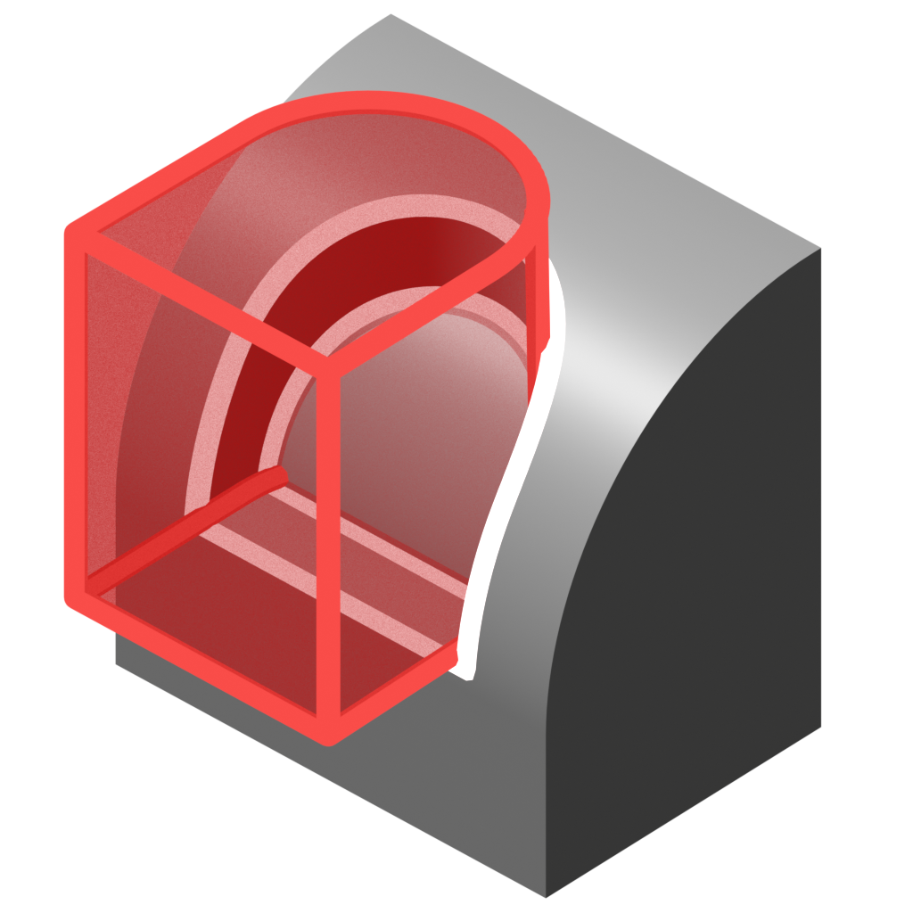
Cuts and extrudes where cutter meshes intersect.
-
Project and blend geometry onto other mesh surfaces.
-
Project, cut, blend and weld insert meshes into the surface of a mesh.
-
Single axis mirror with extra options that works with custom normals.
-
Solidify meshes with advanced profile control. Supports custom normals.
-
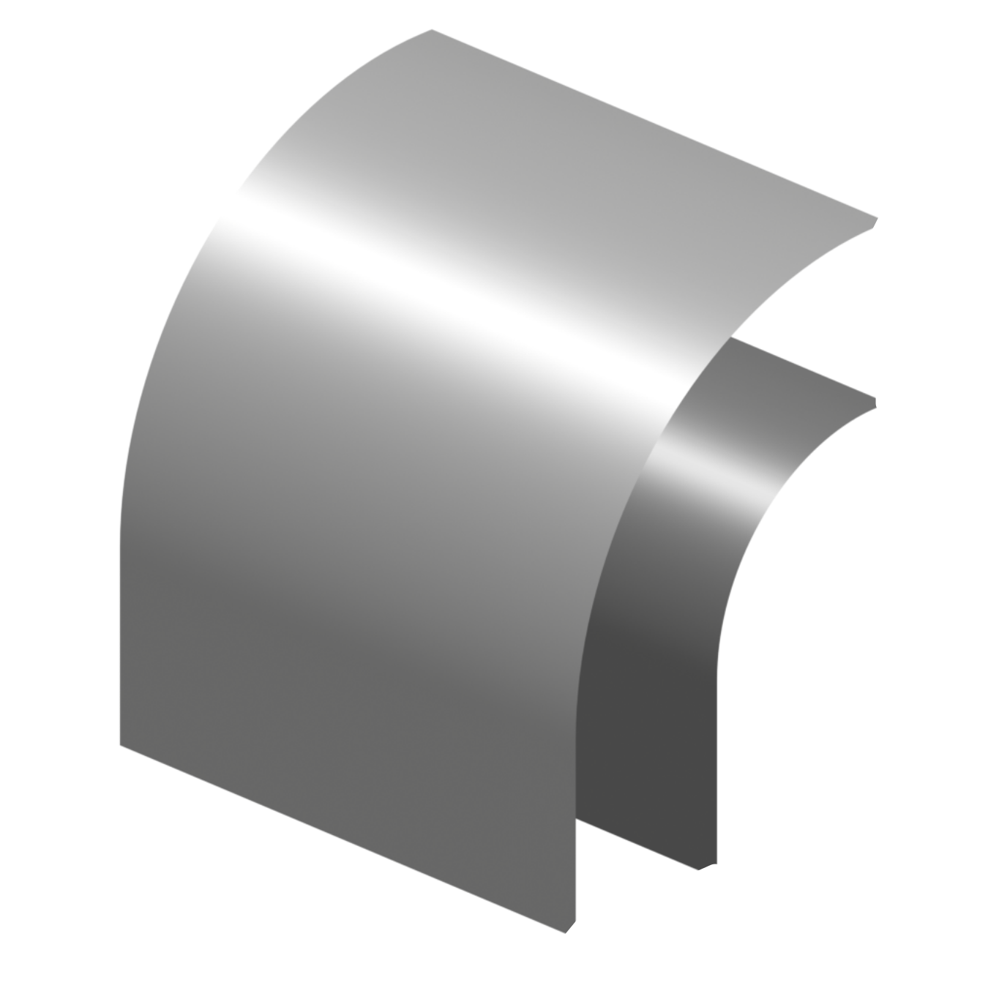
Offset the surface of a mesh with options for even thickness.
-
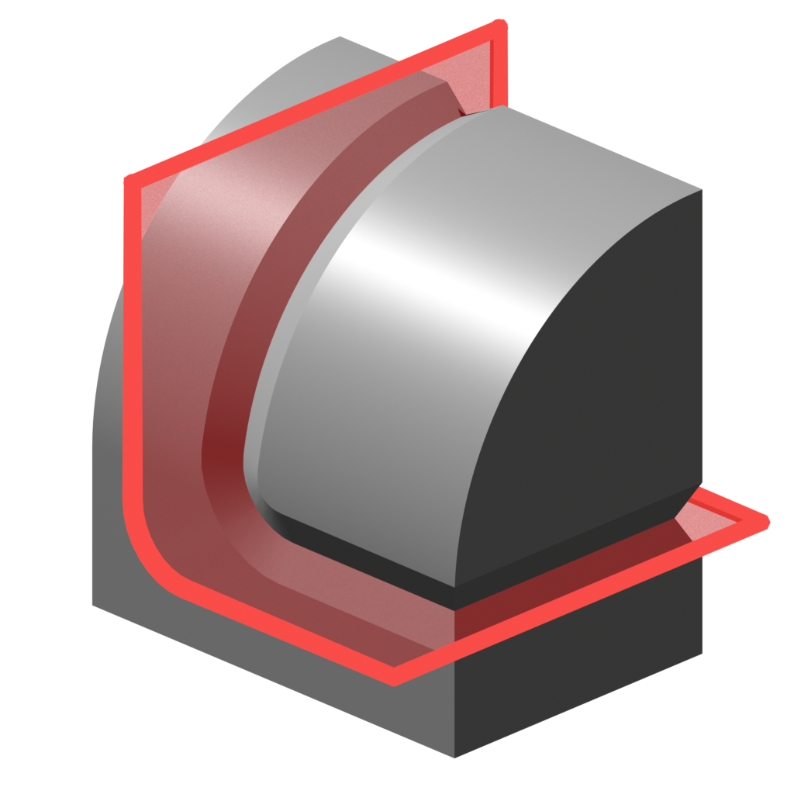
Cut a v-shaped groove or gap into a surface where cutter objects intersect.
Normal Modifiers¶
These modifiers affect the normals of a mesh and nothing else.
-
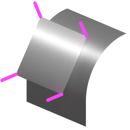
Transfer normals from other mesh objects.
-
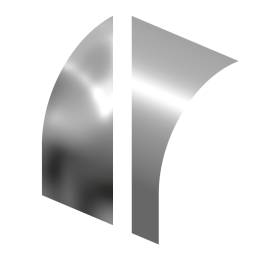
Smooth normals without smoothing mesh topology.
-
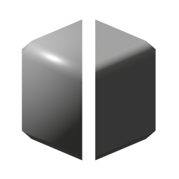
Face weighted normals with selection control.
-
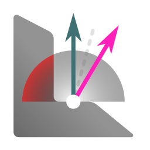
Calculate bent normals directly on geometry for better ambient lighting.
-
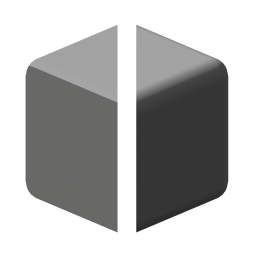
Fix the normals of bevels on meshes with custom normals.
-
Fix bad normals caused by applied Booleans.
-
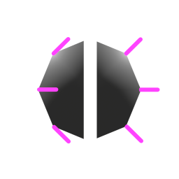
Flip custom normals on mirrored geometry so they point the right way.
-
Create custom normals, or convert between "Free" and "Tangent Space" normals.
Visualize Modifiers¶
These modifiers produce geometry to visualize normals and related attributes.
-
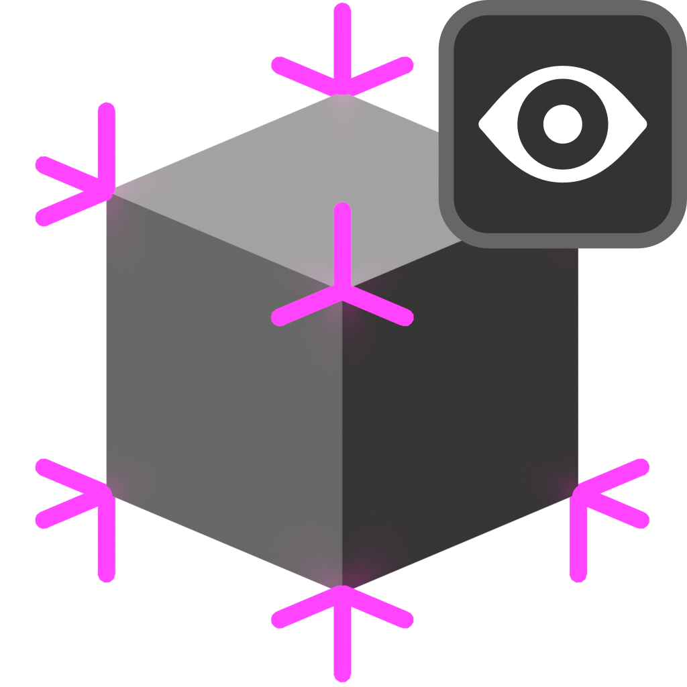
Visualize mesh normals in the viewport.
-
Visualize sharp edges in the viewport.
Other Modifiers¶
These modifiers change things related to normals, such as sharp edges or face orientation.
-
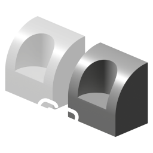
Instance another object to replace or append to the current geometry.
-
Mark sharp edges by angle, with options to add or remove custom normals.
-
Write edge and point attributes based on sharp edges.
-
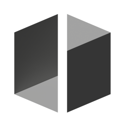
Detect and fix flipped faces automatically.
-
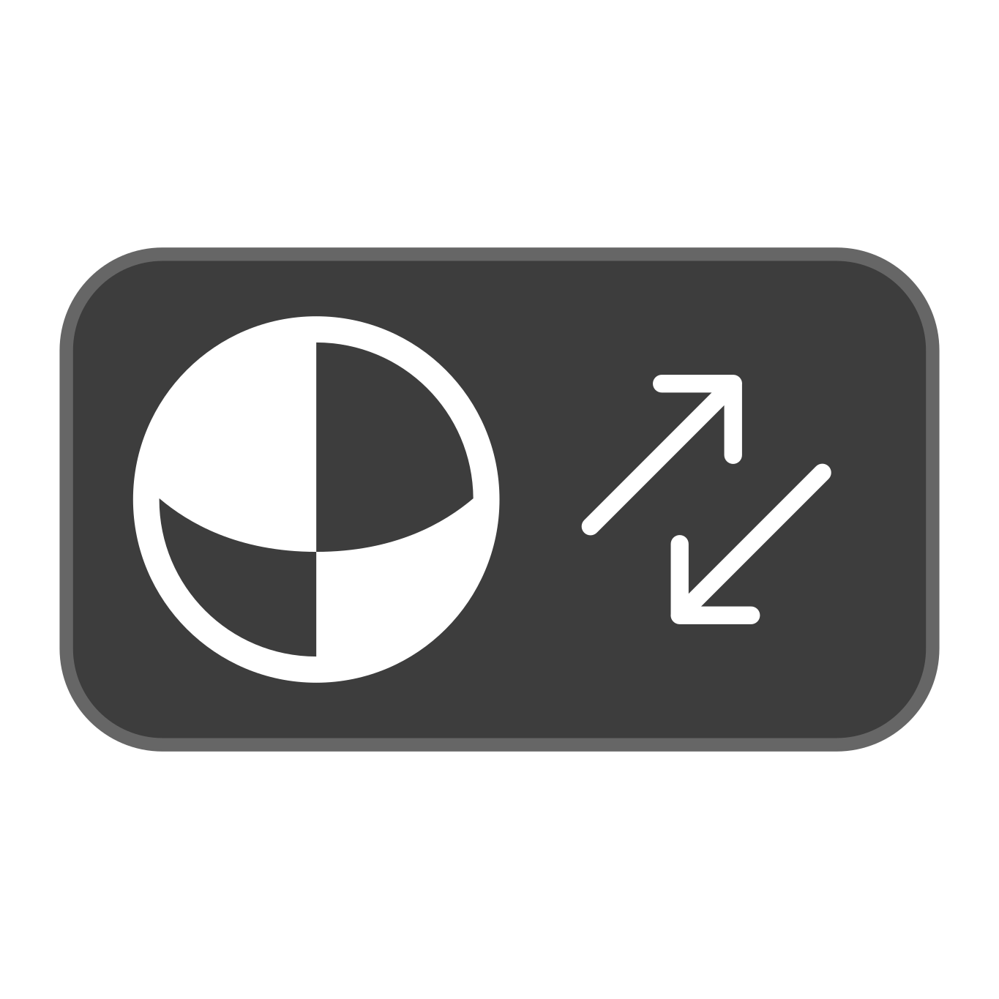
Assign materials or material indices to face selections.
Manual Tools¶
These tools are available as destructive operations. There isn't much here yet, if you wish to see more modifiers become manual tools please reach out!
-
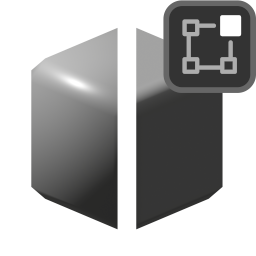
Weighted normals and mark sharp for selected geometry in Edit Mode.
-
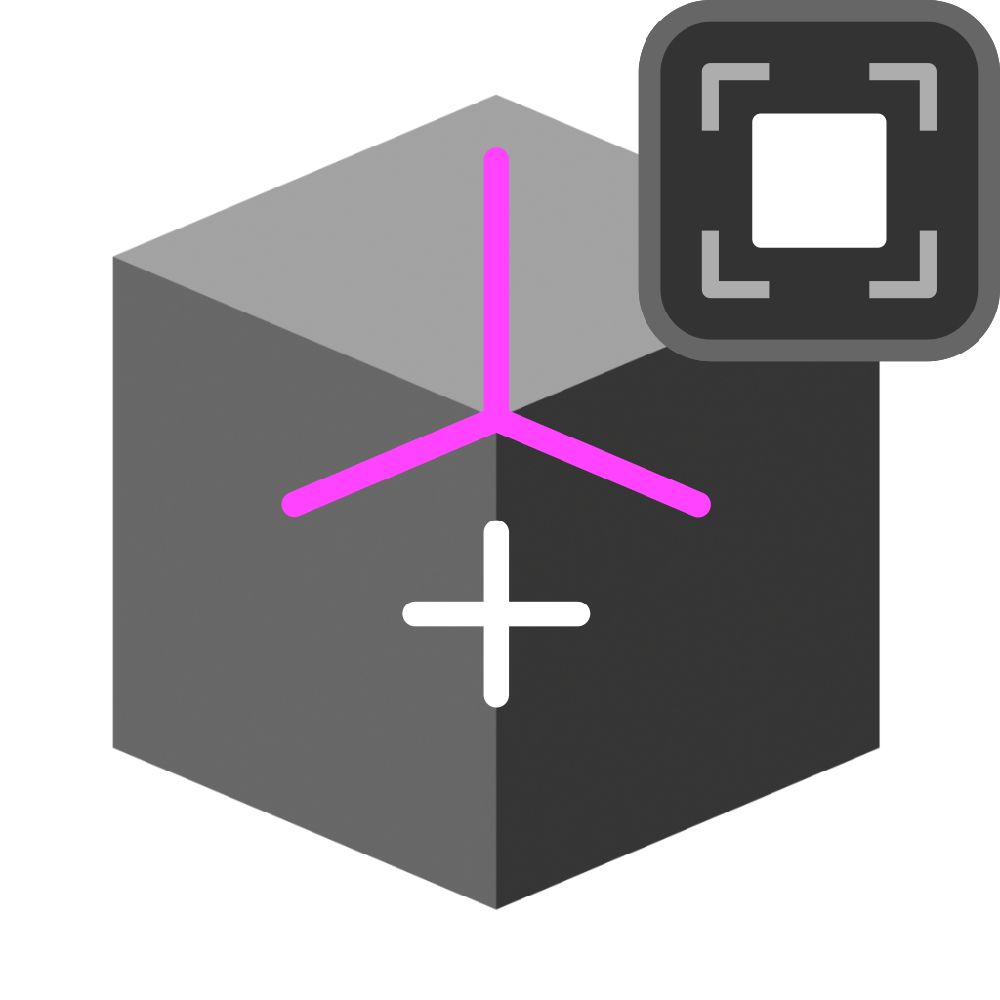
Add custom normals to selected mesh objects.